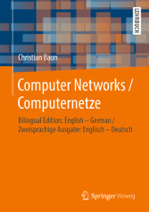

|
|
Wechseln Sie zur Seite in englischer Sprache
|


|
Computernetze ermöglichen den Zusammenschluss eigenständiger Computersysteme zur Kommunikation und gemeinsamen Nutzung von Ressourcen. Die Kommunikation in Computernetzen erfolgt über verschiedene Protokolle, die über verschiedene Schichtenmodelle (OSI-Referenzmodell, TCP/IP-Referenzmodell, hybrides Modell) strukturiert werden können. Zu Beginn der Vorlesung findet eine Einführung in die nötigen Grundlagen der Informatik und der Computernetze statt. Danach werden die Protokolle und ihre Klassifikation in die etablierten Referenzmodelle besprochen. Der Schwerpunkt dieser Vorlesung ist die Beschreibung des Transports von Daten durch die unterschiedlichen Protokollebenen und Übertragungsmedien. Die komplette Vorlesung (inkl. Übungen und Klausur) findet in englischer Sprache statt. Alle Vorlesungsunterlagen liegen mit identischem Inhalt in deutscher und englischer Sprache vor. Eine Übersicht über die verwendeten Fachbegriffe enthält diese Seite. Die Vorlesungsunterlagen sind die Grundlage für die 5. Auflage des Buches Computernetze kompakt, das im Herbst 2019 bei Springer Vieweg erscheint ist. ISBN: 978-3-662-59896-2 Zusätzlich existiert eine bilinguale (Englisch-Deutsch) Ausgabe - Computer Networks / Computernetze, die im Sommer 2019 bei Springer Vieweg erschienen ist. ISBN: 978-3-658-26355-3
|
| Datum | Zeit | Raum | Veranstaltung | Inhalte |
|---|---|---|---|---|
| 03.11.2020 | 10:00-11:30 | Vorlesung | Besprechung von Foliensatz 1 (Folie 1-25) | |
| 10.11.2020 | 10:00-11:30 | Vorlesung | Besprechung von Foliensatz 1 (Folie 26-46) + Foliensatz 2 (Folie 1-5) | |
| 17.11.2020 | 10:00-11:30 | Vorlesung | Besprechung von Foliensatz 2 (Folie 6-36) | |
| 24.11.2020 | 10:00-11:30 | Vorlesung | Besprechung von Foliensatz 2 (Folie 37-54) + Foliensatz 3 (Folie 1-41) | |
| 01.12.2020 | 10:00-11:30 | Vorlesung | Besprechung von Foliensatz 4 (Folie 1-?) | |
| 08.12.2020 | 10:00-11:30 | Vorlesung | ??? | |
| 15.12.2020 | 10:00-11:30 | Vorlesung | ??? | |
| 22.12.2020 | 10:00-11:30 | Vorlesung | ??? | |
| 29.12.2020 | Weihnachtsferien | |||
| 05.01.2021 | 10:00-11:30 | Vorlesung | ??? | |
| 12.01.2021 | 10:00-11:30 | Vorlesung | ??? | |
| 19.01.2021 | 10:00-11:30 | Vorlesung | ??? | |
| 26.01.2021 | 10:00-11:30 | Vorlesung | ??? | |
| 02.02.2021 | 10:00-11:30 | Vorlesung | ??? | |
| 09.02.2021 | 10:00-11:30 | Vorlesung | Fragestunde | |
| ??? | ??? | ??? | Klausur | Die Klausur deckt alle besprochenen Foliensätze und Übungsblätter ab |
| Foliensätze | Screencasts | Inhalte | ||
|---|---|---|---|---|
| Foliensatz 1 | Organisatorisches, Grundlagen der Computervernetzung, Protokolle und Referenzmodelle | |||
| Foliensatz 2 | Bitübertragungsschicht (Teil 1) | |||
| Foliensatz 3 | Bitübertragungsschicht (Teil 2) | |||
| Foliensatz 4 | Sicherungsschicht (Teil 1) | |||
| Foliensatz 5 | Sicherungsschicht (Teil 2) | |||
| Foliensatz 6 | Sicherungsschicht (Teil 3) | |||
| Foliensatz 7 | Vermittlungsschicht (Teil 1) | |||
| Foliensatz 8 | Vermittlungsschicht (Teil 2) | |||
| Foliensatz 9 | Transportschicht | |||
| Foliensatz 10 | Anwendungsschicht | |||
| Foliensatz 11 | Kryptologie (Grundbegriffe, Symmetrische Verfahren) | |||
| Foliensatz 12 | Kryptologie (Asymmetrische Verfahren, Schlüsselverteilung, Hashfunktionen) | |||
| Foliensatz 13 | Steganographie, Plagiatsfallen und Wasserzeichen | |||
| Übungsblätter | Inhalte | Lösungen | |||
|---|---|---|---|---|---|
| Übungsblatt 1 | Foliensatz 1 (Grundlagen) | ||||
| Übungsblatt 2 | Foliensatz 2 + 3 (Bitübertragungsschicht) | ||||
| Übungsblatt 3 | Foliensatz 4 + 5 + 6 (Sicherungsschicht) | ||||
| Übungsblatt 4 | Foliensatz 7 + 8 (Vermittlungsschicht) | ||||
| Übungsblatt 5 | Foliensatz 9 + 10 (Transportschicht und Anwendungsschicht) | ||||
| Übungsblatt 6 | Foliensatz 11 + 12 + 13 (Kryptologie und Steganographie) | ||||
| Semester | Klausuren | Bearbeitungszeit | Hochschule | Lösungen | ||
|---|---|---|---|---|---|---|
| WS2021 | 90 Minuten | Frankfurt UAS | ||||
| WS1920 | 90 Minuten | Frankfurt UAS | ||||
| WS1819 | 90 Minuten | Frankfurt UAS | ||||
| WS1718 | 90 Minuten | Frankfurt UAS | ||||
| SS2017 | 90 Minuten | Frankfurt UAS | ||||
| WS1617 | 90 Minuten | Frankfurt UAS | ||||
| SS2016 | 90 Minuten | Frankfurt UAS | ||||
| WS1516 | 90 Minuten | Frankfurt UAS | ||||
| SS2015 | 90 Minuten | Frankfurt UAS | ||||
| WS1415 | 90 Minuten | FH Frankfurt | ||||
| SS2014 | 90 Minuten | FH Frankfurt | ||||
| WS1314 | 90 Minuten | FH Frankfurt | ||||
| SS2012 | 90 Minuten | HS Darmstadt | ||||
| Aufgabenblatt | ||
| Netzwerkkomponenten |

Zu erreichen bin ich am besten per E-Mail: christianbaun@fb2.fra-uas.de
|
Prof. Dr. Christian Baun Frankfurt University of Applied Sciences (1971-2014: Fachhochschule Frankfurt am Main) FB 2: Informatik und Ingenieurwissenschaften Stand: 22.10.2020 |
|